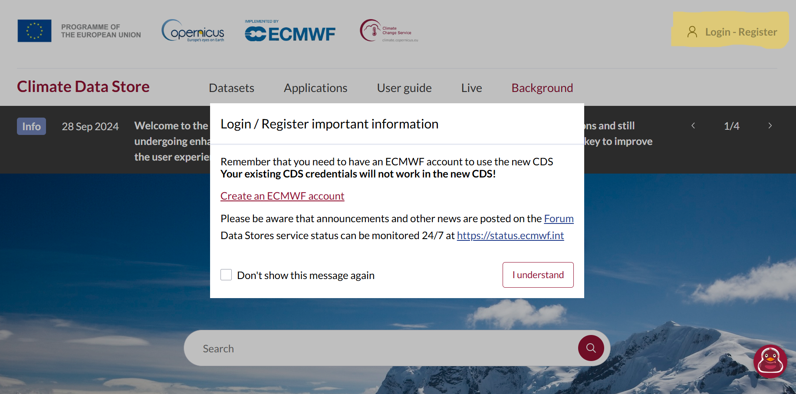
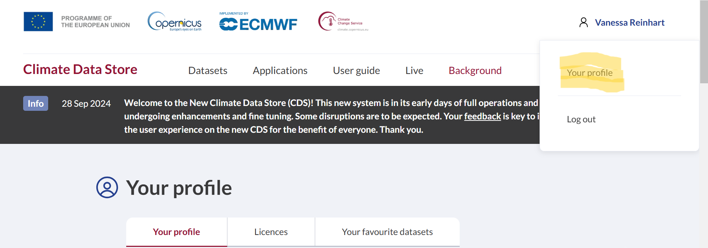

Element 1
Lernziele
Einrichtung der CDS API
Zur Einrichtung der CDS API (Application Programming Interface, notwendige Installation, um Daten aus dem CDS herunterzuladen) benötigen Sie einen Nutzeraccount im Copernicus Climate Data Store (CDS). Diesen richten Sie direkt über den CDS ein.
Falls Sie noch keinen Nutzeraccount haben, erstellen Sie sich einen Account über die Startseite. Oben rechts im Fenster klicken Sie auf „Login/Register“. Das Dialogfenster erscheint wie unten angezeigt. Erstellen Sie sich einen ECMWF-Account wie beschrieben und loggen Sie sich dann mit Ihrem ECMWF-Nutzernamen und Passwort im Copernicus CDS ein.
1. Persönlicher API-Key
Nach dem Login können Sie sich in Ihrem Account Ihre API-Informationen ansehen. Den API-Key (oder API-Token) benötigen Sie im nächsten Schritt.
Laden Sie sich die folgende Datei herunter, entpacken und öffnen Sie die Datei und ergänzen Sie Ihren persönlichen API-Key in der zweiten Zeile (anstelle von ####).
2. Installation der CDS API
Nun sind Sie bereit, die CDS API zu installieren. Öffnen Sie die CMD (Eingabeaufforderung) und geben Sie folgenden Befehl ein:
pip install cdsapi
Sie sollten nun alle Voraussetzungen erfüllt haben, um Daten aus dem CDS herunterzuladen. Im nächsten Schritt probieren wir dies mit einem Testdatensatz aus.
Download von Klimadaten aus dem CDS
Unser Testdatensatz ist der Reanalyse-Datensatz ERA5. Falls Sie sich mit dem Datensatz gut auskennen, können Sie den Infokasten überspringen und gleich zum nächsten Schritt übergehen.
Bemerkung
Der ERA5-Klimadatensatz ist eine umfangreiche Sammlung von Wetter- und Klimadaten, die von der Europäischen Organisation für die Nutzung meteorologischer Satelliten (ECMWF) erstellt wurde. Es handelt sich dabei um eine historische Wetter- und Klimadatenbank, die auf modernen Rechenmodellen und Satellitenmessungen basiert. ERA5 umfasst kontinuierliche Wetterdaten der letzten Jahrzehnten, von 1950 bis in die Gegenwart. Diese Daten umfassen unter anderem Temperatur, Luftfeuchtigkeit oder Windgeschwindigkeit. In Wissenschaft und Klimaforschung wird der ERA5-Datensatz genutzt, um langfristige Klimatrends zu untersuchen. Zum Beispiel kann anhand der Daten analysiert werden, wie sich die Temperaturen im Verlauf von Jahrzehnten verändert haben oder wie sich die Häufigkeit von Extremwetterereignissen entwickelt hat.
Kurz gesagt, der ERA5-Datensatz ist eine wertvolle Wissensquelle für viele verschiedene Disziplinen und Bereiche, weil er fundierte und verlässliche Daten für die Analyse des globalen Klimasystems bereitstellt. Der ERA5-Datensatz dient auch als Grundlage für die Entwicklung von Klimamodellen und Wettervorhersagen. Er hilft, genauere und realistischere Prognosen zu erstellen, was für zukünftiges Risikomanagement relevant ist.
1. Erstellen der API-Request
Die im CDS verfügbaren Datensätze können durch die räumliche und zeitliche Abdeckung schnell mehrere Gigabyte groß werden. Im CDS haben Sie die Möglichkeit, individuell Variablen, Zeiträume und Regionen auszuwählen, damit der Datensatz nicht unnötig Speicherplatz auf Ihrem Computer verbraucht. Für den Test laden wir nur einen kleinen Teil des Datensatzes herunter (eine Variable für einen Tag im Oktober 2024).
Um die gewünschten Daten automatisiert über die CDS API herunterzuladen, müssen Sie zunächst einen API-Request-Code erzeugen. Dafür gehen Sie in den Copernicus Climate Data Store, loggen sich ein und suchen nach dem Datensatz ERA5-Land hourly data from 1950 to present.
Gehen Sie auf den Download-Tab und wählen Sie die Parameter wie folgt aus:
Temperature: 2m temperature
Year: 2024
Month: October
Day: 01
Time: Select all
Die Region Ihrer Wahl können Sie im Bereich „Geographical Area“ festlegen. Dies sollten Sie tun, damit der Datensatz nicht für den gesamten, verfügbaren Bereich heruntergeladen wird.
Wir haben für Sie die Koordinaten für die Region rund um den Bodensee vorbereitet, der Test-Region des CoKLIMAx-Projekts.

Bemerkung
Ihre eigenen Wunschkoordinaten können Sie sich ganz einfach im von uns entwickelten bbox-generator erstellen. Kopieren Sie sich die Koordinaten in die Zwischenablage oder in ein Textdokument. Diese können später auch noch direkt im Jupyter-Notebook eingegeben werden.
Für die weiteren Parameter Datenformat und Komprimierung setzen Sie die Felder in der Eingabemaske bitte wie in der folgenden Abbildung gezeigt.

Sobald Sie die Nutzungsbedingungen akzeptiert haben, müssen Sie nur noch auf „Show API request code“ klicken und der automatisch generierte API-Request-Code erscheint. Für unsere Testdaten sieht dieser wie folgt aus:
import cdsapi
dataset = "reanalysis-era5-land"
request = {
"variable": ["2m_temperature"],
"year": "2024",
"month": "10",
"day": ["01"],
"time": [
"00:00", "01:00", "02:00",
"03:00", "04:00", "05:00",
"06:00", "07:00", "08:00",
"09:00", "10:00", "11:00",
"12:00", "13:00", "14:00",
"15:00", "16:00", "17:00",
"18:00", "19:00", "20:00",
"21:00", "22:00", "23:00"
],
"data_format": "netcdf",
"download_format": "zip",
"area": [48.7, 7, 47.1, 11]
}
client = cdsapi.Client()
client.retrieve(dataset, request).download()
2. Die API-Request im Jupyter Notebook
Öffnen Sie nun ein Jupyter Notebook.
jupyter lab
Falls das Öffnen des Jupyter Notebooks nicht funktioniert, gehen Sie am besten noch einmal die Anleitung durch, die wir hier für Sie vorbereitet haben.